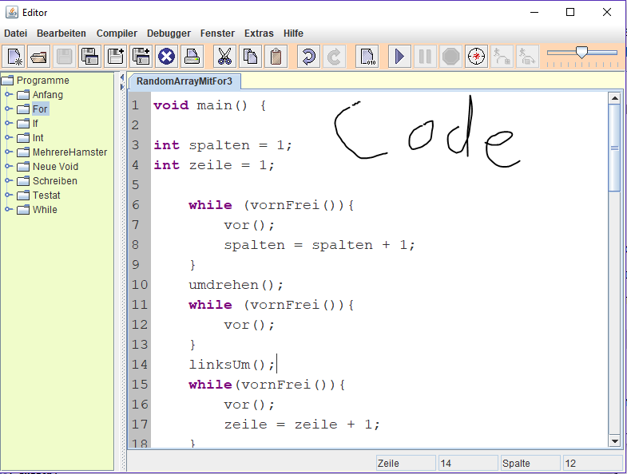
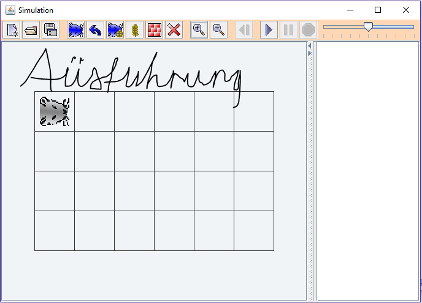

Den Einstieg in HTML und CSS habe ich bereits in der 10 Klasse der Realschule Meinersen, in einem Informatikkurs, erlernt.
Mein Lehrer dort war Herr Gaubinger, welcher mir zudem das übersichtliche Einrücken beibrachte.
Mir wurde dort simples HTML 4.1 erklärt und die Bearbeitung von Bildern mit CSS.
Meinen Einstieg in Java habe ich bei Frau Dr. Bauerdorf in meiner jetzigen Schule, welche die BBS 1 in Gifhorn ist, gemacht.
Bei ihr habe ich die Grundkenntnisse in Java mit dem Hamstersimulator erlernt.

In diesem Bild sieht man den Quelltext der Datei, die man erstellt. Es gibt eigene Befehle wie z. B. vor(), linksUm() und nimm().

In diesem Bild werden die Programme nun ausgeführt. Der Bereich kann mit Blockaden oder auch Körnern befüllt werden.
Dieser ist ebenfalls erweiterbar um den Hamster z. B. durch ein Labyrinth laufen zu lassen.